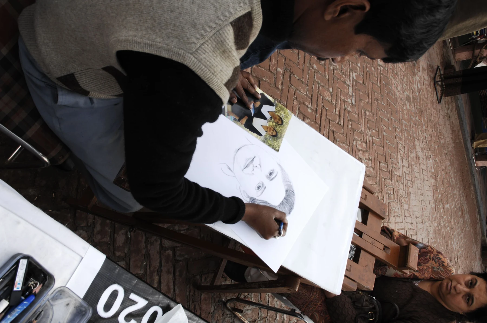

INSIDE
THE FRAME.
A photograph holds more than its first impression. Follow a gesture, a line, a change in light. These six visual essays take a slower route through the collection.
06 VISUAL ESSAYS 01
01
A city never holds still.
Yellow taxis, intersecting journeys and a football in rain: three photographs about the ways a street gathers movement.
Read the story 02
02The space between people.
An offered bite, a direct gaze and a face behind ironwork reveal three different ways a photograph brings us near.
Read the storyStone, colour, touch.
Rock-cut entrances, a hand reaching for a bell, and a scalloped arch move between the scale of a place and a gesture.
Read the story 04
04Two places to pause.
Pelicans over green water and birds above a city: a close reading of the archive’s two nature photographs.
Read the story 05
05What the light lets through.
A wet playing surface, a quiet interior and a painted figure reveal how brightness directs the eye through an image.
Read the story
06Give a photograph another minute.
Three hands-at-work photographs become a practical guide to noticing a focal point, following a line and reading a wider setting.
Read the storyThese essays are new readings of the photographs in this archive. They describe what can be seen and offer ways to look; they are not Shashi’s own words or accounts of how the photographs were made.
About the archive